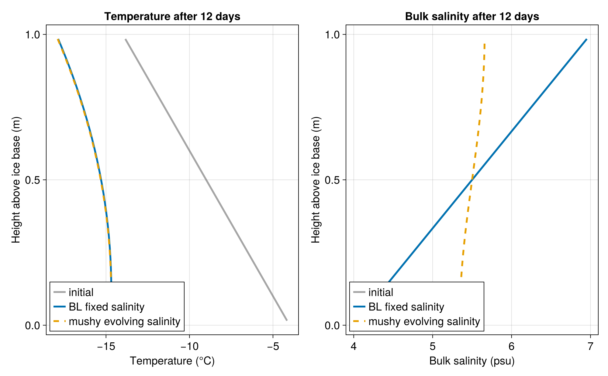
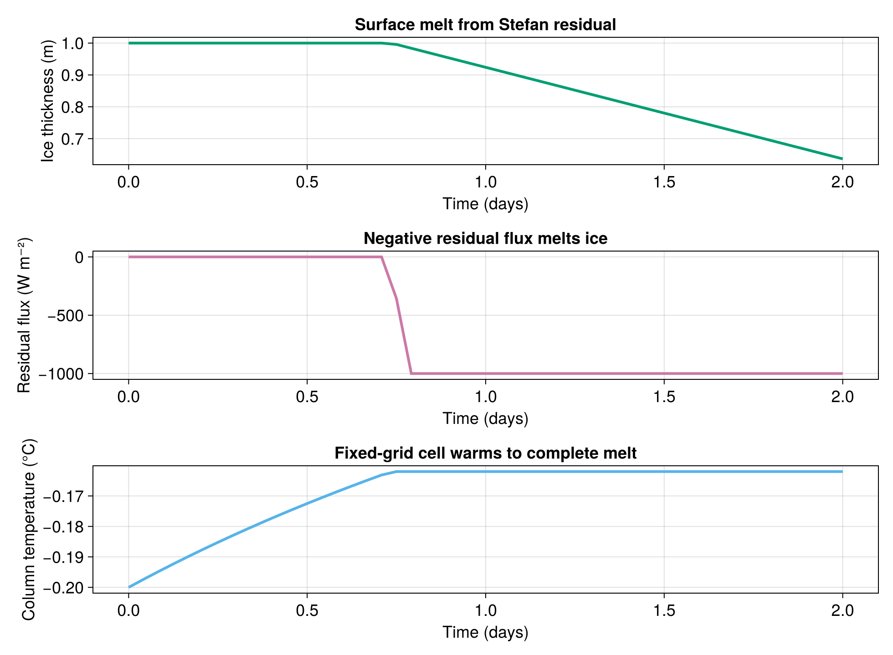

Column energy thermodynamics comparison
This example compares two one-dimensional column configurations:
- a Bitz-Lipscomb-style fixed-salinity enthalpy column, constructed with
prescribed_salinity_enthalpy_thermodynamics; - an evolving-salinity mushy column, constructed with
evolving_salinity_mushy_thermodynamics.
Both columns start from the same temperature and bulk-salinity profiles and use the same surface cooling and basal ocean heat flux. The fixed-salinity column keeps bulk salinity prescribed, while the mushy column diffuses bulk salinity with closed salinity boundaries.
Install dependencies
using Pkg
pkg"add Oceananigans, ClimaSeaIce, CairoMakie"using Printf
using Oceananigans
using Oceananigans.Fields: Field, interior, set!
using Oceananigans.Units
using ClimaSeaIce.SeaIceThermodynamics
using CairoMakieModel configuration
The vertical coordinate runs from the ice base, $z = 0$, to the ice surface, $z = 1$ meter. A negative top flux cools the column, while a positive bottom flux supplies a small ocean heat input.
Nz = 32
grid = RectilinearGrid(size = Nz,
z = (0, 1),
topology = (Flat, Flat, Bounded))
relation = QuadraticLiquidusEnergyRelation(Float64)
top_surface_flux = -15.0 # W m^-2, cooling at the top face
bottom_ocean_flux = 2.0 # W m^-2, warming at the bottom face
boundary_conditions = ColumnBoundaryConditions(top = PrescribedEnergyFlux(top_surface_flux),
bottom = PrescribedEnergyFlux(bottom_ocean_flux))
energy_transport = ConductiveTemperatureTransport(conductivity = 2.0)ConductiveTemperatureTransport{Float64}(2.0)The initial salinity increases toward the surface. The mushy configuration smooths this profile with a deliberately visible closed-boundary diffusivity.
initial_temperature(z) = -4 - 10z
initial_salinity(z) = 4 + 3z
bl = prescribed_salinity_enthalpy_thermodynamics(grid;
relation,
salinity_profile = initial_salinity,
energy_transport,
boundary_conditions)
mushy = evolving_salinity_mushy_thermodynamics(grid;
relation,
energy_transport,
salinity_transport = BulkSalinityDiffusion(diffusivity = 2e-7),
boundary_conditions)
set!(bl; temperature = initial_temperature,
bulk_salinity = initial_salinity)
set!(mushy; temperature = initial_temperature,
bulk_salinity = initial_salinity)Running the columns
We step both columns for twelve days and store temperature and salinity profiles every six hours for plotting and animation.
Δt = 1hour
stop_time = 12days
save_interval = 6hours
Nt = round(Int, stop_time / Δt)
save_stride = round(Int, save_interval / Δt)
column_values(field) = vec(Array(interior(field, 1, 1, :)))
times = Float64[]
bl_temperatures = Vector{Vector{Float64}}()
mushy_temperatures = Vector{Vector{Float64}}()
bl_salinity = Vector{Vector{Float64}}()
mushy_salinity = Vector{Vector{Float64}}()
function save_state!(time)
push!(times, time)
push!(bl_temperatures, column_values(bl.fields.temperature))
push!(mushy_temperatures, column_values(mushy.fields.temperature))
push!(bl_salinity, column_values(bl.fields.bulk_salinity))
push!(mushy_salinity, column_values(mushy.fields.bulk_salinity))
return nothing
end
initial_bl_energy = column_integrated_energy(bl)
initial_mushy_energy = column_integrated_energy(mushy)
initial_mushy_salt = column_integrated_salinity(mushy)
save_state!(0)
for n in 1:Nt
column_energy_time_step!(bl, Δt)
column_energy_time_step!(mushy, Δt)
if n % save_stride == 0
save_state!(n * Δt)
end
endQuantitative comparison
bl_energy_budget = column_energy_budget(bl, initial_bl_energy, stop_time)
mushy_energy_budget = column_energy_budget(mushy, initial_mushy_energy, stop_time)
mushy_salt_budget = column_salt_budget(mushy, initial_mushy_salt, stop_time)
final_bl_temperature = last(bl_temperatures)
final_mushy_temperature = last(mushy_temperatures)
final_bl_salinity = last(bl_salinity)
final_mushy_salinity = last(mushy_salinity)
comparison = (
elapsed_days = stop_time / day,
bl_surface_temperature = final_bl_temperature[end],
mushy_surface_temperature = final_mushy_temperature[end],
max_temperature_difference = maximum(abs.(final_bl_temperature .- final_mushy_temperature)),
max_salinity_difference = maximum(abs.(final_bl_salinity .- final_mushy_salinity)),
bl_energy_budget_relative_residual = bl_energy_budget.relative_residual,
mushy_energy_budget_relative_residual = mushy_energy_budget.relative_residual,
mushy_salt_budget_relative_residual = mushy_salt_budget.relative_residual,
)
println("Column comparison after ", comparison.elapsed_days, " days")
@printf(" BL surface temperature: %.3f °C\n", comparison.bl_surface_temperature)
@printf(" Mushy surface temperature: %.3f °C\n", comparison.mushy_surface_temperature)
@printf(" Max |T_BL - T_mushy|: %.3e K\n", comparison.max_temperature_difference)
@printf(" Max |S_BL - S_mushy|: %.3e psu\n", comparison.max_salinity_difference)
@printf(" BL energy budget residual: %.3e\n", comparison.bl_energy_budget_relative_residual)
@printf(" Mushy energy residual: %.3e\n", comparison.mushy_energy_budget_relative_residual)
@printf(" Mushy salt residual: %.3e\n", comparison.mushy_salt_budget_relative_residual)Column comparison after 12.0 days
BL surface temperature: -17.864 °C
Mushy surface temperature: -17.894 °C
Max |T_BL - T_mushy|: 3.071e-02 K
Max |S_BL - S_mushy|: 1.295e+00 psu
BL energy budget residual: 2.536e-15
Mushy energy residual: 0.000e+00
Mushy salt residual: 1.004e-13Final profiles
z = collect(range(1 / (2Nz), 1 - 1 / (2Nz), length = Nz))
set_theme!(Theme(fontsize = 18, linewidth = 3))
colors = Makie.wong_colors()
fig = Figure(size = (1000, 620))
axT = Axis(fig[1, 1],
xlabel = "Temperature (°C)",
ylabel = "Height above ice base (m)",
title = "Temperature after 12 days")
axS = Axis(fig[1, 2],
xlabel = "Bulk salinity (psu)",
ylabel = "Height above ice base (m)",
title = "Bulk salinity after 12 days")
lines!(axT, first(bl_temperatures), z, color = (:gray30, 0.5), label = "initial")
lines!(axT, final_bl_temperature, z, color = colors[1], label = "BL fixed salinity")
lines!(axT, final_mushy_temperature, z, color = colors[2], linestyle = :dash, label = "mushy evolving salinity")
lines!(axS, first(bl_salinity), z, color = (:gray30, 0.5), label = "initial")
lines!(axS, final_bl_salinity, z, color = colors[1], label = "BL fixed salinity")
lines!(axS, final_mushy_salinity, z, color = colors[2], linestyle = :dash, label = "mushy evolving salinity")
axislegend(axT, position = :lb)
axislegend(axS, position = :lb)
save("column_energy_comparison.png", fig)
Temperature animation
The animation shows both temperature profiles throughout the run. The BL column remains tied to the fixed salinity profile, while the mushy column evolves as salinity diffusion changes the local energy-temperature relation.
animation = Figure(size = (760, 560))
ax = Axis(animation[1, 1],
xlabel = "Temperature (°C)",
ylabel = "Height above ice base (m)",
title = "Column temperature evolution")
xlims!(ax, -19, -3)
ylims!(ax, 0, 1)
frame = Observable(1)
bl_frame = @lift bl_temperatures[$frame]
mushy_frame = @lift mushy_temperatures[$frame]
time_label = lift(frame) do n
@sprintf("t = %.1f days", times[n] / day)
end
lines!(ax, bl_frame, z, color = colors[1], label = "BL fixed salinity")
lines!(ax, mushy_frame, z, color = colors[2], linestyle = :dash, label = "mushy evolving salinity")
text!(ax, -18.5, 0.08, text = time_label, align = (:left, :bottom))
axislegend(ax, position = :lb)
CairoMakie.record(animation, "column_energy_temperature_evolution.mp4", eachindex(times);
framerate = 8) do n
frame[] = n
endSurface melting
The fixed-grid column solve does not move grid faces. To demonstrate melting, we use MeltingLimitedSurfaceFlux: the requested surface flux warms the top cell until it reaches complete melt, and any remaining flux is returned as a Stefan residual. That residual then updates a separate ice-thickness field.
melt_grid = RectilinearGrid(size = 1,
z = (0, 1),
topology = (Flat, Flat, Bounded))
melt_salinity = 3.0
melt_initial_temperature = -0.2
requested_melt_flux = 1000.0 # W m^-2 into the surface
melt_dt = 1hour
melt_stop_time = 2days
ρi = 900.0
melt_boundary_conditions =
ColumnBoundaryConditions(top = MeltingLimitedSurfaceFlux(flux = requested_melt_flux),
bottom = InsulatingBoundary())
melt_column = prescribed_salinity_enthalpy_thermodynamics(melt_grid;
relation,
salinity_profile = melt_salinity,
energy_transport = ConductiveTemperatureTransport(conductivity = 0.0),
boundary_conditions = melt_boundary_conditions)
set!(melt_column; bulk_salinity = melt_salinity,
temperature = melt_initial_temperature)
ice_thickness = Field{Center, Center, Nothing}(melt_grid)
surface_residual_flux = Field{Center, Center, Nothing}(melt_grid)
set!(ice_thickness, 1.0)
melt_times = Float64[]
melt_thicknesses = Float64[]
melt_temperatures = Float64[]
melt_residuals = Float64[]
melt_budget_residuals = Float64[]
function save_melt_state!(time, residual_flux, budget_residual)
push!(melt_times, time)
push!(melt_thicknesses, first(interior(ice_thickness)))
push!(melt_temperatures, first(interior(melt_column.fields.temperature)))
push!(melt_residuals, residual_flux)
push!(melt_budget_residuals, budget_residual)
return nothing
end
save_melt_state!(0, 0.0, 0.0)
for n in 1:round(Int, melt_stop_time / melt_dt)
initial_energy = column_integrated_energy(melt_column)
residual_flux = column_surface_stefan_residual_flux(melt_column, melt_dt)
compute_column_surface_stefan_residual_flux!(surface_residual_flux, melt_column, melt_dt)
column_energy_time_step!(melt_column, melt_dt)
column_stefan_thickness_update!(ice_thickness,
relation.phase_transitions,
ρi,
surface_residual_flux,
melt_dt)
budget = column_energy_budget(melt_column, initial_energy, melt_dt;
surface_stefan_residual_flux = residual_flux)
save_melt_state!(n * melt_dt, residual_flux, budget.relative_residual)
end
melt_result = (
final_thickness = last(melt_thicknesses),
thickness_loss = first(melt_thicknesses) - last(melt_thicknesses),
final_temperature = last(melt_temperatures),
maximum_melt_flux = -minimum(melt_residuals),
maximum_budget_residual = maximum(abs.(melt_budget_residuals)),
)
println("Surface melting case after ", melt_stop_time / day, " days")
@printf(" Final thickness: %.3f m\n", melt_result.final_thickness)
@printf(" Thickness lost: %.3f m\n", melt_result.thickness_loss)
@printf(" Final column temperature: %.3f °C\n", melt_result.final_temperature)
@printf(" Maximum melt flux: %.3f W m^-2\n", melt_result.maximum_melt_flux)
@printf(" Max budget residual: %.3e\n", melt_result.maximum_budget_residual)
melt_fig = Figure(size = (980, 720))
axh = Axis(melt_fig[1, 1],
xlabel = "Time (days)",
ylabel = "Ice thickness (m)",
title = "Surface melt from Stefan residual")
axr = Axis(melt_fig[2, 1],
xlabel = "Time (days)",
ylabel = "Residual flux (W m⁻²)",
title = "Negative residual flux melts ice")
axmT = Axis(melt_fig[3, 1],
xlabel = "Time (days)",
ylabel = "Column temperature (°C)",
title = "Fixed-grid cell warms to complete melt")
lines!(axh, melt_times ./ day, melt_thicknesses, color = colors[3])
lines!(axr, melt_times ./ day, melt_residuals, color = colors[4])
lines!(axmT, melt_times ./ day, melt_temperatures, color = colors[5])
save("column_energy_surface_melt.png", melt_fig)Surface melting case after 2.0 days
Final thickness: 0.636 m
Thickness lost: 0.364 m
Final column temperature: -0.162 °C
Maximum melt flux: 1000.000 W m^-2
Max budget residual: 0.000e+00
This page was generated using Literate.jl.